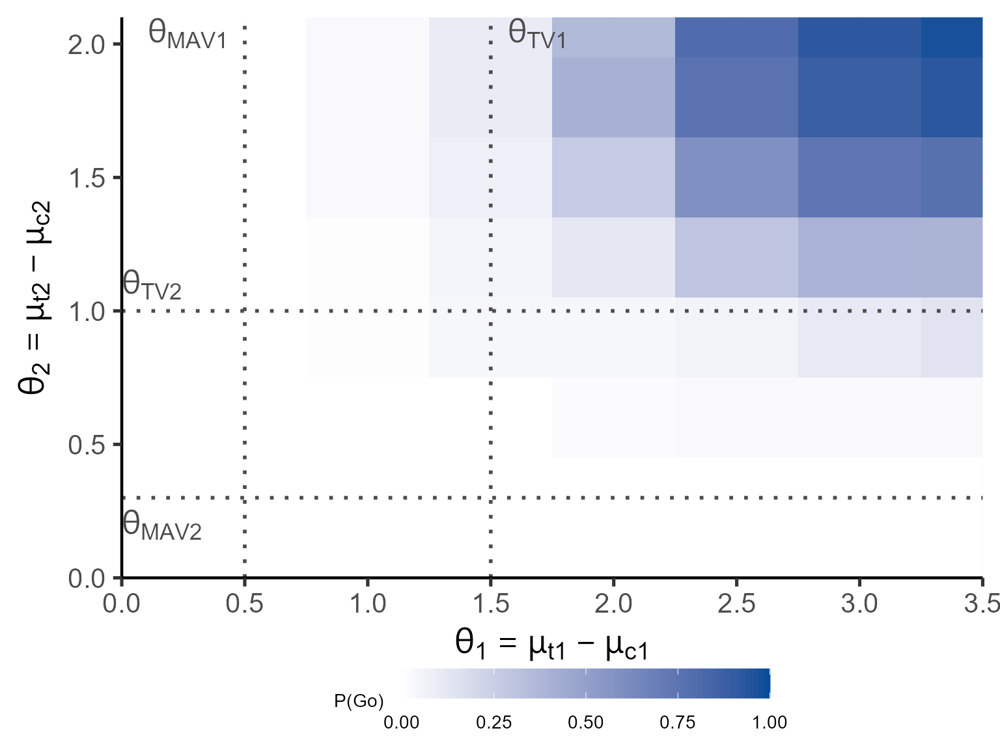
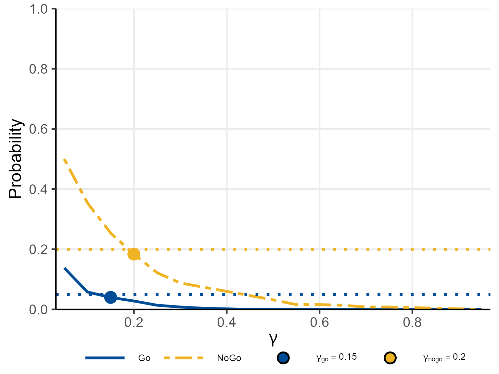

Motivating Scenario
We extend the single-endpoint RA trial to a bivariate design with two co-primary continuous endpoints:
- Endpoint 1: change from baseline in DAS28 score
- Endpoint 2: change from baseline in HAQ-DI (Health Assessment Questionnaire – Disability Index)
The trial enrolls \(n_t = n_c = 20\) patients per group (treatment vs. placebo) in a 1:1 randomised controlled design.
Clinically meaningful thresholds (posterior probability):
| Endpoint 1 | Endpoint 2 | |
|---|---|---|
| \(\theta_{\mathrm{TV},1}\) | 1.5 | 1.0 |
| \(\theta_{\mathrm{MAV},1}\) | 0.5 | 0.3 |
Null hypothesis thresholds (predictive probability): \(\theta_{\mathrm{NULL},1} = 0.5\), \(\theta_{\mathrm{NULL},2} = 0.3\).
Decision thresholds: \(\gamma_1 = 0.80\) (Go), \(\gamma_2 = 0.20\) (NoGo).
Observed data (used in Sections 2–4):
- Treatment: \(\bar{\mathbf{y}}_t = (3.5, 2.1)^\top\), \(S_t = \begin{pmatrix}18.0 & 3.6\\3.6 & 9.0\end{pmatrix}\)
- Control: \(\bar{\mathbf{y}}_c = (1.8, 1.0)^\top\), \(S_c = \begin{pmatrix}16.0 & 2.8\\2.8 & 8.5\end{pmatrix}\)
where \(S_j = \sum_{i=1}^{n_j}(\mathbf{y}_{ij} - \bar{\mathbf{y}}_j) (\mathbf{y}_{ij} - \bar{\mathbf{y}}_j)^\top\) (\(j = t, c\)) is the sum-of-squares matrix.
1. Bayesian Model: Normal-Inverse-Wishart Conjugate
1.1 Prior Distribution
For group \(j\) (\(j = t\): treatment, \(j = c\): control), we model the bivariate outcomes for patient \(i\) (\(i = 1, \ldots, n_j\)) as
\[\mathbf{y}_{ij} \mid \boldsymbol{\mu}_j, \Sigma_j \;\overset{iid}{\sim}\; \mathcal{N}_2(\boldsymbol{\mu}_j,\, \Sigma_j).\]
The conjugate prior is the Normal-Inverse-Wishart (NIW) distribution:
\[(\boldsymbol{\mu}_j, \Sigma_j) \;\sim\; \mathrm{NIW}(\boldsymbol{\mu}_{0j},\, \kappa_{0j},\, \nu_{0j},\, \Lambda_{0j}),\]
where \(\boldsymbol{\mu}_{0j} \in
\mathbb{R}^2\) is the prior mean (argument mu0_t or
mu0_c), \(\kappa_{0j} >
0\) is the prior concentration (kappa0_t or
kappa0_c), \(\nu_{0j} >
3\) is the prior degrees of freedom (nu0_t or
nu0_c), and \(\Lambda_{0j}\) is a \(2 \times 2\) positive-definite prior scale
matrix (Lambda0_t or Lambda0_c).
The vague (Jeffreys) prior is obtained by letting \(\kappa_{0j} \to 0\) and \(\nu_{0j} \to 0\)
(prior = 'vague').
1.2 Posterior Distribution
Given \(n_j\) observations with
sample mean \(\bar{\mathbf{y}}_j\)
(ybar_t or ybar_c) and sum-of-squares matrix
\(S_j\) (S_t or
S_c), the NIW posterior has updated parameters:
\[\kappa_{nj} = \kappa_{0j} + n_j, \qquad \nu_{nj} = \nu_{0j} + n_j,\]
\[\boldsymbol{\mu}_{nj} = \frac{\kappa_{0j}\,\boldsymbol{\mu}_{0j} + n_j\,\bar{\mathbf{y}}_j} {\kappa_{nj}},\]
\[\Lambda_{nj} = \Lambda_{0j} + S_j + \frac{\kappa_{0j}\,n_j}{\kappa_{nj}} (\bar{\mathbf{y}}_j - \boldsymbol{\mu}_{0j}) (\bar{\mathbf{y}}_j - \boldsymbol{\mu}_{0j})^\top.\]
The marginal posterior of the group mean \(\boldsymbol{\mu}_j\) is a bivariate non-standardised \(t\)-distribution:
\[\boldsymbol{\mu}_j \mid \mathbf{Y}_j \;\sim\; t_{\nu_{nj} - 1}\!\!\left(\boldsymbol{\mu}_{nj},\; \frac{\Lambda_{nj}}{\kappa_{nj}(\nu_{nj} - 1)}\right).\]
Under the vague prior, this simplifies to
\[\boldsymbol{\mu}_j \mid \mathbf{Y}_j \;\sim\; t_{n_j - 2}\!\!\left(\bar{\mathbf{y}}_j,\; \frac{S_j}{n_j(n_j - 2)}\right).\]
1.3 Posterior of the Bivariate Treatment Effect
The bivariate treatment effect is \(\boldsymbol{\theta} = \boldsymbol{\mu}_t - \boldsymbol{\mu}_c\). Since the two groups are independent, the posterior of \(\boldsymbol{\theta}\) is the distribution of the difference of two independent bivariate \(t\)-vectors:
\[T_j \;\sim\; t_{\nu_{nj}-1}(\boldsymbol{\mu}_{nj},\, V_j),\]
where the posterior scale matrix is \(V_j = \Lambda_{nj} / [\kappa_{nj}(\nu_{nj}-1)]\).
The posterior probability that \(\boldsymbol{\theta}\) falls in a rectangular region \(R\) defined by thresholds on each component is
\[P(\boldsymbol{\theta} \in R \mid \mathbf{Y}) = P(T_t - T_c \in R),\]
computed by one of two methods (MC or MM) described in Section 3.
1.4 Nine-Region Grid (Posterior Probability)
The bivariate threshold grid for \((\theta_1, \theta_2)\) creates a \(3 \times 3\) partition using
theta_TV1, theta_MAV1, theta_TV2,
theta_MAV2:
| Endpoint 1 | ||||
|---|---|---|---|---|
| θ1 > θTV1 | θTV1 ≥ θ1 > θMAV1 | θMAV1 ≥ θ1 | ||
| Endpoint 2 | θ2 > θTV2 | R1 | R4 | R7 |
| θTV2 ≥ θ2 > θMAV2 | R2 | R5 | R8 | |
| θMAV2 ≥ θ2 | R3 | R6 | R9 | |
Region \(R_1\) (both endpoints exceed \(\theta_{\mathrm{TV}}\)) is typically designated as Go and \(R_9\) (both endpoints below \(\theta_{\mathrm{MAV}}\)) as NoGo.
1.5 Four-Region Grid (Predictive Probability)
For the predictive probability, a \(2
\times 2\) partition is used, defined by theta_NULL1
and theta_NULL2:
| Endpoint 1 | |||
|---|---|---|---|
| θ1 > θNULL1 | θ1 ≤ θNULL1 | ||
| Endpoint 2 | θ2 > θNULL2 | R1 | R3 |
| θ2 ≤ θNULL2 | R2 | R4 | |
Region \(R_1\) (both endpoints exceed \(\theta_{\mathrm{NULL}}\)) is typically designated as Go and \(R_4\) (both endpoints at or below \(\theta_{\mathrm{NULL}}\)) as NoGo.
2. Posterior Predictive Distribution
The predictive distribution of the future sample mean \(\bar{\tilde{\mathbf{y}}}_j\) based on \(m_j\) future patients (m_t or
m_c) is again a bivariate \(t\)-distribution:
\[\bar{\tilde{\mathbf{y}}}_j \mid \mathbf{Y}_j \;\sim\; t_{\nu_{nj}-1}\!\!\left(\boldsymbol{\mu}_{nj},\; \frac{\Lambda_{nj}}{\kappa_{nj}(\nu_{nj}-1)} \cdot \frac{\kappa_{nj} + 1}{\kappa_{nj}} \cdot \frac{1}{m_j} \right)\]
under the NIW prior. Under the vague prior the scale inflates to \(S_j(n_j + 1) / [n_j^2(n_j - 2) m_j]\).
3. Two Computation Methods
The computation method is specified via the CalcMethod
argument.
3.1 Monte Carlo Simulation (CalcMethod = 'MC')
For each of \(n_\mathrm{MC}\) draws
(nMC), independent samples are generated:
\[T_t^{(i)} \;\sim\; t_{\nu_{nt}-1}(\boldsymbol{\mu}_{nt}, V_t), \qquad T_c^{(i)} \;\sim\; t_{\nu_{nc}-1}(\boldsymbol{\mu}_{nc}, V_c),\]
and the probability of region \(R_\ell\) is estimated as the empirical proportion:
\[\widehat{P}(R_\ell) = \frac{1}{n_\mathrm{MC}} \sum_{i=1}^{n_\mathrm{MC}} \mathbf{1}\!\left[T_t^{(i)} - T_c^{(i)} \in R_\ell\right].\]
When pbayespostpred2cont() is called in vectorised mode
over \(n_\mathrm{sim}\) replicates, all
\(n_\mathrm{MC}\) standard normal and
chi-squared draws are pre-generated once and reused; only the Cholesky
factor of the replicate-specific scale matrix is recomputed per
observation.
3.2 Moment-Matching Approximation
(CalcMethod = 'MM')
For each marginal component \(k = 1,
2\), the difference \(D_k = T_{t,k} -
T_{c,k}\) is approximated by a univariate \(t_{\nu_k^*}(\mu_k^*, \sigma_k^*)\) using
the same fourth-moment equations as for the single-endpoint case (see
vignette("single-continuous")).
The joint probability over the rectangular region \(R\) is then evaluated using the bivariate
\(t\)-distribution from
mvtnorm::pmvt(), treating the two approximate marginals as
jointly \(t\)-distributed with a
correlation derived from the posterior covariance matrices. This avoids
simulation entirely and is exact in the normal limit (\(\nu_{nj} \to \infty\)).
The MM method requires \(\nu_{nj} - 1 > 4\) for both groups; if this condition is not met, the function falls back to MC automatically.
4. Study Designs
4.1 Controlled Design
Both groups are observed in the PoC trial. All NIW posterior parameters are updated from the current data.
Posterior probability – vague prior:
S_t <- matrix(c(18.0, 3.6, 3.6, 9.0), 2, 2)
S_c <- matrix(c(16.0, 2.8, 2.8, 8.5), 2, 2)
set.seed(42)
p_post_vague <- pbayespostpred2cont(
prob = 'posterior', design = 'controlled', prior = 'vague',
theta_TV1 = 1.5, theta_MAV1 = 0.5,
theta_TV2 = 1.0, theta_MAV2 = 0.3,
theta_NULL1 = NULL, theta_NULL2 = NULL,
n_t = 20L, n_c = 20L,
ybar_t = c(3.5, 2.1), S_t = S_t,
ybar_c = c(1.8, 1.0), S_c = S_c,
m_t = NULL, m_c = NULL,
kappa0_t = NULL, nu0_t = NULL, mu0_t = NULL, Lambda0_t = NULL,
kappa0_c = NULL, nu0_c = NULL, mu0_c = NULL, Lambda0_c = NULL,
r = NULL,
ne_t = NULL, ne_c = NULL, alpha0e_t = NULL, alpha0e_c = NULL,
bar_ye_t = NULL, bar_ye_c = NULL, se_t = NULL, se_c = NULL,
nMC = 5000L
)
print(round(p_post_vague, 4))
#> R1 R2 R3 R4 R5 R6 R7 R8 R9
#> 0.5056 0.2198 0.0000 0.1478 0.1264 0.0002 0.0000 0.0002 0.0000
cat(sprintf(
"g_Go = P(R1 | data) = %.4f\n", p_post_vague["R1"]
))
#> g_Go = P(R1 | data) = 0.5056
cat(sprintf(
"g_NoGo = P(R9 | data) = %.4f\n\n", p_post_vague["R9"]
))
#> g_NoGo = P(R9 | data) = 0.0000
cat(sprintf(
"Go criterion: g_Go >= gamma1 (0.80)? %s\n",
ifelse(p_post_vague["R1"] >= 0.80, "YES", "NO")
))
#> Go criterion: g_Go >= gamma1 (0.80)? NO
cat(sprintf(
"NoGo criterion: g_NoGo >= gamma2 (0.20)? %s\n",
ifelse(p_post_vague["R9"] >= 0.20, "YES", "NO")
))
#> NoGo criterion: g_NoGo >= gamma2 (0.20)? NO
cat(sprintf("Decision: %s\n",
ifelse(p_post_vague["R1"] >= 0.80 & p_post_vague["R9"] < 0.20, "Go",
ifelse(p_post_vague["R1"] < 0.80 & p_post_vague["R9"] >= 0.20, "NoGo",
ifelse(p_post_vague["R1"] >= 0.80 & p_post_vague["R9"] >= 0.20, "Miss",
"Gray")))
))
#> Decision: GrayPosterior probability – NIW informative prior:
L0 <- matrix(c(8.0, 0.0, 0.0, 2.0), 2, 2)
set.seed(42)
p_post_niw <- pbayespostpred2cont(
prob = 'posterior', design = 'controlled', prior = 'N-Inv-Wishart',
theta_TV1 = 1.5, theta_MAV1 = 0.5,
theta_TV2 = 1.0, theta_MAV2 = 0.3,
theta_NULL1 = NULL, theta_NULL2 = NULL,
n_t = 20L, n_c = 20L,
ybar_t = c(3.5, 2.1), S_t = S_t,
ybar_c = c(1.8, 1.0), S_c = S_c,
m_t = NULL, m_c = NULL,
kappa0_t = 2.0, nu0_t = 5.0, mu0_t = c(2.0, 1.0), Lambda0_t = L0,
kappa0_c = 2.0, nu0_c = 5.0, mu0_c = c(0.0, 0.0), Lambda0_c = L0,
r = NULL,
ne_t = NULL, ne_c = NULL, alpha0e_t = NULL, alpha0e_c = NULL,
bar_ye_t = NULL, bar_ye_c = NULL, se_t = NULL, se_c = NULL,
nMC = 5000L
)
print(round(p_post_niw, 4))
#> R1 R2 R3 R4 R5 R6 R7 R8 R9
#> 0.5116 0.2228 0.0000 0.1320 0.1324 0.0010 0.0002 0.0000 0.0000Posterior predictive probability (future Phase III: \(m_t = m_c = 60\)):
set.seed(42)
p_pred <- pbayespostpred2cont(
prob = 'predictive', design = 'controlled', prior = 'vague',
theta_TV1 = NULL, theta_MAV1 = NULL,
theta_TV2 = NULL, theta_MAV2 = NULL,
theta_NULL1 = 0.5, theta_NULL2 = 0.3,
n_t = 20L, n_c = 20L,
ybar_t = c(3.5, 2.1), S_t = S_t,
ybar_c = c(1.8, 1.0), S_c = S_c,
m_t = 60L, m_c = 60L,
kappa0_t = NULL, nu0_t = NULL, mu0_t = NULL, Lambda0_t = NULL,
kappa0_c = NULL, nu0_c = NULL, mu0_c = NULL, Lambda0_c = NULL,
r = NULL,
ne_t = NULL, ne_c = NULL, alpha0e_t = NULL, alpha0e_c = NULL,
bar_ye_t = NULL, bar_ye_c = NULL, se_t = NULL, se_c = NULL,
nMC = 5000L
)
print(round(p_pred, 4))
#> R1 R2 R3 R4
#> 1 0 0 0
cat(sprintf(
"\nGo region (R1): P = %.4f >= gamma1 (0.80)? %s\n",
p_pred["R1"], ifelse(p_pred["R1"] >= 0.80, "YES", "NO")
))
#>
#> Go region (R1): P = 1.0000 >= gamma1 (0.80)? YES
cat(sprintf(
"NoGo region (R4): P = %.4f >= gamma2 (0.20)? %s\n",
p_pred["R4"], ifelse(p_pred["R4"] >= 0.20, "YES", "NO")
))
#> NoGo region (R4): P = 0.0000 >= gamma2 (0.20)? NO
cat(sprintf("Decision: %s\n",
ifelse(p_pred["R1"] >= 0.80 & p_pred["R4"] < 0.20, "Go",
ifelse(p_pred["R1"] < 0.80 & p_pred["R4"] >= 0.20, "NoGo",
ifelse(p_pred["R1"] >= 0.80 & p_pred["R4"] >= 0.20, "Miss",
"Gray")))
))
#> Decision: Go4.2 Uncontrolled Design
No concurrent control group is enrolled. Under the NIW prior, the hypothetical control distribution is
\[\boldsymbol{\mu}_c \;\sim\; t_{\nu_{nt}-1}\!\!\left(\boldsymbol{\mu}_{0c},\; r \cdot \frac{\Lambda_{nt}}{\kappa_{nt}(\nu_{nt}-1)}\right),\]
where \(\boldsymbol{\mu}_{0c}\)
(mu0_c) is the assumed control mean, \(r > 0\) (r) scales the
covariance relative to the treatment group, and \(\Lambda_{nt}\) is the posterior scale
matrix of the treatment group.
set.seed(1)
p_unctrl <- pbayespostpred2cont(
prob = 'posterior', design = 'uncontrolled', prior = 'N-Inv-Wishart',
theta_TV1 = 1.5, theta_MAV1 = 0.5,
theta_TV2 = 1.0, theta_MAV2 = 0.3,
theta_NULL1 = NULL, theta_NULL2 = NULL,
n_t = 20L, n_c = NULL,
ybar_t = c(3.5, 2.1), S_t = S_t,
ybar_c = NULL, S_c = NULL,
m_t = NULL, m_c = NULL,
kappa0_t = 2.0, nu0_t = 5.0, mu0_t = c(2.0, 1.0), Lambda0_t = L0,
kappa0_c = NULL, nu0_c = NULL, mu0_c = c(0.0, 0.0), Lambda0_c = NULL,
r = 1.0,
ne_t = NULL, ne_c = NULL, alpha0e_t = NULL, alpha0e_c = NULL,
bar_ye_t = NULL, bar_ye_c = NULL, se_t = NULL, se_c = NULL,
nMC = 5000L
)
print(round(p_unctrl, 4))
#> R1 R2 R3 R4 R5 R6 R7 R8 R9
#> 1 0 0 0 0 0 0 0 04.3 External Control Design (Power Prior)
External data for the control group (sample size \(n_{e,c}\), sample mean \(\bar{\mathbf{y}}_{e,c}\), sum-of-squares
\(S_{e,c}\)) are incorporated via a
power prior with weight \(\alpha_{0e,c} \in
(0,1]\) (arguments ne_c, bar_ye_c,
se_c, alpha0e_c).
Under the NIW conjugate formulation, the augmented prior for the control group is first constructed from the external data:
\[\kappa_{0c}^{\mathrm{aug}} = \kappa_{0c} + \alpha_{0e,c}\,n_{e,c}, \qquad \nu_{0c}^{\mathrm{aug}} = \nu_{0c} + \alpha_{0e,c}\,n_{e,c},\]
\[\boldsymbol{\mu}_{0c}^{\mathrm{aug}} = \frac{\kappa_{0c}\,\boldsymbol{\mu}_{0c} + \alpha_{0e,c}\,n_{e,c}\,\bar{\mathbf{y}}_{e,c}} {\kappa_{0c}^{\mathrm{aug}}},\]
\[\Lambda_{0c}^{\mathrm{aug}} = \Lambda_{0c} + \alpha_{0e,c}\,S_{e,c} + \frac{\kappa_{0c}\,\alpha_{0e,c}\,n_{e,c}} {\kappa_{0c}^{\mathrm{aug}}} (\bar{\mathbf{y}}_{e,c} - \boldsymbol{\mu}_{0c}) (\bar{\mathbf{y}}_{e,c} - \boldsymbol{\mu}_{0c})^\top.\]
These augmented parameters replace \((\kappa_{0c}, \nu_{0c}, \boldsymbol{\mu}_{0c}, \Lambda_{0c})\) in the posterior update.
Se2_ext <- matrix(c(15.0, 2.5, 2.5, 7.5), 2, 2)
set.seed(2)
p_ext <- pbayespostpred2cont(
prob = 'posterior', design = 'external', prior = 'N-Inv-Wishart',
theta_TV1 = 1.5, theta_MAV1 = 0.5,
theta_TV2 = 1.0, theta_MAV2 = 0.3,
theta_NULL1 = NULL, theta_NULL2 = NULL,
n_t = 20L, n_c = 20L,
ybar_t = c(3.5, 2.1), S_t = S_t,
ybar_c = c(1.8, 1.0), S_c = S_c,
m_t = NULL, m_c = NULL,
kappa0_t = 2.0, nu0_t = 5.0, mu0_t = c(2.0, 1.0), Lambda0_t = L0,
kappa0_c = 2.0, nu0_c = 5.0, mu0_c = c(0.0, 0.0), Lambda0_c = L0,
r = NULL,
ne_t = NULL, ne_c = 10L, alpha0e_t = NULL, alpha0e_c = 0.5,
bar_ye_t = NULL, bar_ye_c = c(1.5, 0.8), se_t = NULL, se_c = Se2_ext,
nMC = 5000L
)
print(round(p_ext, 4))
#> R1 R2 R3 R4 R5 R6 R7 R8 R9
#> 0.5712 0.2078 0.0000 0.1166 0.1040 0.0004 0.0000 0.0000 0.00005. Operating Characteristics
5.1 Definition
For given true parameters \((\boldsymbol{\mu}_t, \Sigma_t,
\boldsymbol{\mu}_c, \Sigma_c)\) (mu_t,
Sigma_t, mu_c, Sigma_c), the
operating characteristics are estimated by Monte Carlo over \(n_\mathrm{sim}\) replicates
(nsim). Let \(\hat{g}_{\mathrm{Go},i} = P(\text{GoRegions} \mid
\mathbf{Y}^{(i)})\) and \(\hat{g}_{\mathrm{NoGo},i} = P(\text{NoGoRegions}
\mid \mathbf{Y}^{(i)})\) for the \(i\)-th simulated dataset. Then:
\[\widehat{\Pr}(\mathrm{Go}) = \frac{1}{n_\mathrm{sim}} \sum_{i=1}^{n_\mathrm{sim}} \mathbf{1}\!\left[\hat{g}_{\mathrm{Go},i} \ge \gamma_1 \;\text{and}\; \hat{g}_{\mathrm{NoGo},i} < \gamma_2\right],\]
\[\widehat{\Pr}(\mathrm{NoGo}) = \frac{1}{n_\mathrm{sim}} \sum_{i=1}^{n_\mathrm{sim}} \mathbf{1}\!\left[\hat{g}_{\mathrm{NoGo},i} \ge \gamma_2 \;\text{and}\; \hat{g}_{\mathrm{Go},i} < \gamma_1\right],\]
\[\widehat{\Pr}(\mathrm{Miss}) = \frac{1}{n_\mathrm{sim}} \sum_{i=1}^{n_\mathrm{sim}} \mathbf{1}\!\left[\hat{g}_{\mathrm{Go},i} \ge \gamma_1 \;\text{and}\; \hat{g}_{\mathrm{NoGo},i} \ge \gamma_2\right],\]
\[\widehat{\Pr}(\mathrm{Gray}) = 1 - \widehat{\Pr}(\mathrm{Go}) - \widehat{\Pr}(\mathrm{NoGo}) - \widehat{\Pr}(\mathrm{Miss}).\]
Here \(\gamma_1\) and \(\gamma_2\) correspond to arguments
gamma_go and gamma_nogo, respectively. A Miss
(\(\hat{g}_{\mathrm{Go}} \ge \gamma_1\)
and \(\hat{g}_{\mathrm{NoGo}} \ge
\gamma_2\) simultaneously) indicates an inconsistent threshold
configuration and triggers an error by default
(error_if_Miss = TRUE).
5.2 Example: Controlled Design, Posterior Probability
Treatment effect scenarios are defined over a two-dimensional grid of
\((\mu_{t1}, \mu_{t2})\) while fixing
\(\boldsymbol{\mu}_c = (0, 0)^\top\).
The full factorial combination of unique \(\mu_{t1}\) and \(\mu_{t2}\) values triggers the tile plot in
plot(), with colour intensity encoding \(\Pr(\mathrm{Go})\):
Sigma <- matrix(c(4.0, 0.8, 0.8, 1.0), 2, 2)
mu_t1_seq <- seq(0.0, 3.5, by = 0.5)
mu_t2_seq <- seq(0.0, 2.1, by = 0.3)
n_scen <- length(mu_t1_seq) * length(mu_t2_seq)
oc_ctrl <- pbayesdecisionprob2cont(
nsim = 100L, prob = 'posterior', design = 'controlled',
prior = 'vague',
GoRegions = 1L, NoGoRegions = 9L,
gamma_go = 0.80, gamma_nogo = 0.20,
theta_TV1 = 1.5, theta_MAV1 = 0.5,
theta_TV2 = 1.0, theta_MAV2 = 0.3,
theta_NULL1 = NULL, theta_NULL2 = NULL,
n_t = 20L, n_c = 20L, m_t = NULL, m_c = NULL,
mu_t = cbind(rep(mu_t1_seq, times = length(mu_t2_seq)),
rep(mu_t2_seq, each = length(mu_t1_seq))),
Sigma_t = Sigma,
mu_c = matrix(0, nrow = n_scen, ncol = 2),
Sigma_c = Sigma,
kappa0_t = NULL, nu0_t = NULL, mu0_t = NULL, Lambda0_t = NULL,
kappa0_c = NULL, nu0_c = NULL, mu0_c = NULL, Lambda0_c = NULL,
r = NULL,
ne_t = NULL, ne_c = NULL, alpha0e_t = NULL, alpha0e_c = NULL,
bar_ye_t = NULL, bar_ye_c = NULL, se_t = NULL, se_c = NULL,
nMC = 500L, CalcMethod = 'MC',
error_if_Miss = TRUE, Gray_inc_Miss = FALSE, seed = 42L
)
print(oc_ctrl)
#> Go/NoGo/Gray Decision Probabilities (Two Continuous Endpoints)
#> ----------------------------------------------------------------
#> Probability type : posterior
#> Design : controlled
#> Prior : vague
#> Method : NULL
#> Simulations : nsim = 100
#> MC draws : nMC = 500
#> Seed : 42
#> Threshold(s) : TV1 = 1.5, MAV1 = 0.5
#> TV2 = 1, MAV2 = 0.3
#> Go threshold : gamma_go = 0.8
#> NoGo threshold : gamma_nogo = 0.2
#> Go regions : {1}
#> NoGo regions : {9}
#> Sample size : n_t = 20, n_c = 20
#> True cov (treat.): Sigma_t = [4, 0.8; 0.8, 1]
#> True cov (cont.) : Sigma_c = [4, 0.8; 0.8, 1]
#> Miss handling : error_if_Miss = TRUE, Gray_inc_Miss = FALSE
#> ----------------------------------------------------------------
#> mu_t1 mu_t2 mu_c1 mu_c2 Go Gray NoGo
#> 0.0 0.0 0 0 0.0000 0.0800 0.9200
#> 0.5 0.0 0 0 0.0000 0.2100 0.7900
#> 1.0 0.0 0 0 0.0000 0.5900 0.4100
#> 1.5 0.0 0 0 0.0000 0.8600 0.1400
#> 2.0 0.0 0 0 0.0000 0.9400 0.0600
#> 2.5 0.0 0 0 0.0000 0.9900 0.0100
#> 3.0 0.0 0 0 0.0000 1.0000 0.0000
#> 3.5 0.0 0 0 0.0000 1.0000 0.0000
#> 0.0 0.3 0 0 0.0000 0.2600 0.7400
#> 0.5 0.3 0 0 0.0000 0.4000 0.6000
#> 1.0 0.3 0 0 0.0000 0.6800 0.3200
#> 1.5 0.3 0 0 0.0000 0.8700 0.1300
#> 2.0 0.3 0 0 0.0000 0.9400 0.0600
#> 2.5 0.3 0 0 0.0000 0.9900 0.0100
#> 3.0 0.3 0 0 0.0000 1.0000 0.0000
#> 3.5 0.3 0 0 0.0000 1.0000 0.0000
#> 0.0 0.6 0 0 0.0000 0.6200 0.3800
#> 0.5 0.6 0 0 0.0000 0.6600 0.3400
#> 1.0 0.6 0 0 0.0000 0.7900 0.2100
#> 1.5 0.6 0 0 0.0000 0.9300 0.0700
#> 2.0 0.6 0 0 0.0200 0.9400 0.0400
#> 2.5 0.6 0 0 0.0300 0.9600 0.0100
#> 3.0 0.6 0 0 0.0300 0.9700 0.0000
#> 3.5 0.6 0 0 0.0300 0.9700 0.0000
#> 0.0 0.9 0 0 0.0000 0.8700 0.1300
#> 0.5 0.9 0 0 0.0000 0.9000 0.1000
#> 1.0 0.9 0 0 0.0100 0.9200 0.0700
#> 1.5 0.9 0 0 0.0400 0.9000 0.0600
#> 2.0 0.9 0 0 0.0400 0.9300 0.0300
#> 2.5 0.9 0 0 0.0600 0.9400 0.0000
#> 3.0 0.9 0 0 0.1100 0.8900 0.0000
#> 3.5 0.9 0 0 0.1400 0.8600 0.0000
#> 0.0 1.2 0 0 0.0000 0.9500 0.0500
#> 0.5 1.2 0 0 0.0000 0.9500 0.0500
#> 1.0 1.2 0 0 0.0100 0.9700 0.0200
#> 1.5 1.2 0 0 0.0500 0.9300 0.0200
#> 2.0 1.2 0 0 0.1200 0.8800 0.0000
#> 2.5 1.2 0 0 0.3000 0.7000 0.0000
#> 3.0 1.2 0 0 0.4000 0.6000 0.0000
#> 3.5 1.2 0 0 0.3900 0.6100 0.0000
#> 0.0 1.5 0 0 0.0000 1.0000 0.0000
#> 0.5 1.5 0 0 0.0000 1.0000 0.0000
#> 1.0 1.5 0 0 0.0300 0.9700 0.0000
#> 1.5 1.5 0 0 0.0800 0.9200 0.0000
#> 2.0 1.5 0 0 0.2700 0.7300 0.0000
#> 2.5 1.5 0 0 0.5900 0.4100 0.0000
#> 3.0 1.5 0 0 0.7400 0.2600 0.0000
#> 3.5 1.5 0 0 0.7700 0.2300 0.0000
#> 0.0 1.8 0 0 0.0000 1.0000 0.0000
#> 0.5 1.8 0 0 0.0000 1.0000 0.0000
#> 1.0 1.8 0 0 0.0300 0.9700 0.0000
#> 1.5 1.8 0 0 0.1000 0.9000 0.0000
#> 2.0 1.8 0 0 0.4100 0.5900 0.0000
#> 2.5 1.8 0 0 0.7600 0.2400 0.0000
#> 3.0 1.8 0 0 0.8800 0.1200 0.0000
#> 3.5 1.8 0 0 0.9300 0.0700 0.0000
#> 0.0 2.1 0 0 0.0000 1.0000 0.0000
#> 0.5 2.1 0 0 0.0000 1.0000 0.0000
#> 1.0 2.1 0 0 0.0300 0.9700 0.0000
#> 1.5 2.1 0 0 0.1000 0.9000 0.0000
#> 2.0 2.1 0 0 0.3600 0.6400 0.0000
#> 2.5 2.1 0 0 0.8000 0.2000 0.0000
#> 3.0 2.1 0 0 0.9200 0.0800 0.0000
#> 3.5 2.1 0 0 0.9700 0.0300 0.0000
#> ----------------------------------------------------------------
plot(oc_ctrl, base_size = 20)
The same function supports design = 'uncontrolled' (with
hypothetical control mean mu0_c and scale factor
r) and design = 'external' (with power prior
arguments ne_c, bar_ye_c, se_c,
alpha0e_c). The argument prob = 'predictive'
switches to predictive probability (with future sample sizes
m_t, m_c and null thresholds
theta_NULL1, theta_NULL2). The function
signature and output format are identical across all combinations.
6. Optimal Threshold Search
6.1 Objective and Algorithm
Because there are two decision thresholds \((\gamma_1, \gamma_2)\), the optimal search
is performed over a two-dimensional grid \(\Gamma_1 \times \Gamma_2\) (arguments
gamma_go_grid and gamma_nogo_grid). The two
thresholds are calibrated independently under separate scenarios:
-
\(\gamma_1^*\): calibrated under
the Go-calibration scenario (
mu_t_go,Sigma_t_go,mu_c_go,Sigma_c_go; typically the null scenario \(\boldsymbol{\mu}_t = \boldsymbol{\mu}_c\)), so that \(\Pr(\mathrm{Go}) < \texttt{target\_go}\). -
\(\gamma_2^*\): calibrated under
the NoGo-calibration scenario (
mu_t_nogo,Sigma_t_nogo,mu_c_nogo,Sigma_c_nogo; typically the alternative scenario), so that \(\Pr(\mathrm{NoGo}) < \texttt{target\_nogo}\).
getgamma2cont() uses a three-stage strategy:
Stage 1 (Simulate and precompute): \(n_\mathrm{sim}\) bivariate datasets are
generated separately from each calibration scenario. For each replicate
\(i\),
pbayespostpred2cont() is called once in vectorised mode to
return the full region probability vector. The marginal Go and NoGo
probabilities per replicate are:
\[\hat{g}_{\mathrm{Go},i} = \sum_{\ell \in \text{GoRegions}} \hat{p}_{i\ell}, \qquad \hat{g}_{\mathrm{NoGo},i} = \sum_{\ell \in \text{NoGoRegions}} \hat{p}_{i\ell}.\]
Stage 2 (Gamma sweep): For each candidate \(\gamma_1 \in \Gamma_1\) (under the Go-calibration scenario) and each \(\gamma_2 \in \Gamma_2\) (under the NoGo-calibration scenario):
\[\Pr(\mathrm{Go} \mid \gamma_1) = \frac{1}{n_\mathrm{sim}} \sum_{i=1}^{n_\mathrm{sim}} \mathbf{1}\!\left[\hat{g}_{\mathrm{Go},i} \ge \gamma_1\right],\]
\[\Pr(\mathrm{NoGo} \mid \gamma_2) = \frac{1}{n_\mathrm{sim}} \sum_{i=1}^{n_\mathrm{sim}} \mathbf{1}\!\left[\hat{g}_{\mathrm{NoGo},i} \ge \gamma_2\right].\]
The results are stored as vectors PrGo_grid and
PrNoGo_grid indexed by gamma_go_grid and
gamma_nogo_grid, respectively.
Stage 3 (Optimal selection): \(\gamma_1^*\) is the smallest grid value satisfying \(\Pr(\mathrm{Go} \mid \gamma_1) < \texttt{target\_go}\); \(\gamma_2^*\) is the smallest grid value satisfying \(\Pr(\mathrm{NoGo} \mid \gamma_2) < \texttt{target\_nogo}\).
6.2 Example: Controlled Design, Posterior Probability
Go-calibration scenario: \(\boldsymbol{\mu}_t = (0.5, 0.3)^\top\), \(\boldsymbol{\mu}_c = (0, 0)^\top\) (effect at MAV boundary – above which Go is not yet warranted, so \(\Pr(\mathrm{Go}) < \texttt{target\_go}\) is required). NoGo-calibration scenario: \(\boldsymbol{\mu}_t = (1.0, 0.6)^\top\), \(\boldsymbol{\mu}_c = (0, 0)^\top\) (effect between MAV and TV – above which NoGo should be unlikely).
res_gamma <- getgamma2cont(
nsim = 500L, prob = 'posterior', design = 'controlled',
prior = 'vague',
GoRegions = 1L, NoGoRegions = 9L,
mu_t_go = c(0.5, 0.3), Sigma_t_go = Sigma,
mu_c_go = c(0.0, 0.0), Sigma_c_go = Sigma,
mu_t_nogo = c(1.0, 0.6), Sigma_t_nogo = Sigma,
mu_c_nogo = c(0.0, 0.0), Sigma_c_nogo = Sigma,
target_go = 0.05, target_nogo = 0.20,
n_t = 20L, n_c = 20L,
theta_TV1 = 1.5, theta_MAV1 = 0.5,
theta_TV2 = 1.0, theta_MAV2 = 0.3,
theta_NULL1 = NULL, theta_NULL2 = NULL,
m_t = NULL, m_c = NULL,
kappa0_t = NULL, nu0_t = NULL, mu0_t = NULL, Lambda0_t = NULL,
kappa0_c = NULL, nu0_c = NULL, mu0_c = NULL, Lambda0_c = NULL,
r = NULL,
ne_t = NULL, ne_c = NULL, alpha0e_t = NULL, alpha0e_c = NULL,
bar_ye_t = NULL, bar_ye_c = NULL, se_t = NULL, se_c = NULL,
nMC = 500L, CalcMethod = 'MC',
gamma_go_grid = seq(0.05, 0.95, by = 0.05),
gamma_nogo_grid = seq(0.05, 0.95, by = 0.05),
seed = 42L
)
plot(res_gamma, base_size = 20)
The same function supports design = 'uncontrolled' (with
mu0_c and r) and
design = 'external' (with power prior arguments
ne_c, bar_ye_c, se_c,
alpha0e_c). Setting prob = 'predictive'
switches to predictive probability calibration (with
theta_NULL1, theta_NULL2, m_t,
m_c). The function signature is identical across all
combinations.
7. Summary
This vignette covered two continuous endpoint analysis in BayesianQDM:
- Bayesian model: NIW conjugate posterior with explicit update formulae for \(\kappa_{nj}\), \(\nu_{nj}\), \(\boldsymbol{\mu}_{nj}\), and \(\Lambda_{nj}\); bivariate non-standardised \(t\) marginal posterior.
- Nine-region grid for posterior probability and four-region grid for predictive probability; typical choice Go = R1, NoGo = R9 (posterior) or R4 (predictive).
- Two computation methods: MC (vectorised pre-generated draws with
Cholesky reuse) and MM (fourth-moment matching per component +
mvtnorm::pmvtfor the joint probability). - Three study designs: controlled, uncontrolled (\(\boldsymbol{\mu}_{0c}\) and \(r\) fixed), external control (NIW power prior with explicit augmentation formulae for \(\kappa_{0c}^{\mathrm{aug}}\), \(\nu_{0c}^{\mathrm{aug}}\), \(\boldsymbol{\mu}_{0c}^{\mathrm{aug}}\), \(\Lambda_{0c}^{\mathrm{aug}}\)).
- Operating characteristics: Monte Carlo estimation with vectorised region probability computation.
- Optimal threshold search: three-stage strategy in
getgamma2cont()calibrating \(\gamma_1^*\) and \(\gamma_2^*\) independently under separate Go- and NoGo-calibration scenarios, with calibration curves visualised viaplot()and optimal thresholds marked at the target probability levels (\(\Pr(\mathrm{Go}) < 0.05\) under null, \(\Pr(\mathrm{NoGo}) < 0.20\) under alternative).
See vignette("two-binary") for the analogous two binary
endpoint analysis.